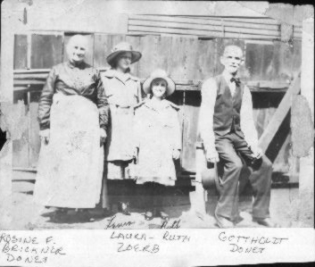

German Roots
This portion of the family tree begins in various towns in Germany and ends up in the town of McKeesport, PA. Jacob Zoerb was born in Rechenbach, Germany and emigrated to McKeesport in 1886. His future wife, Lena Donet, was born in McKeesport in 1873, and her parents had emigrated from Germany in 1871.
George Weiss was born in Byern, Germany and came to the US in 1883. His wife, Margaret Peetz, was the last of the ancestors to arrive in the US; she came in 1902.

The Donet Family